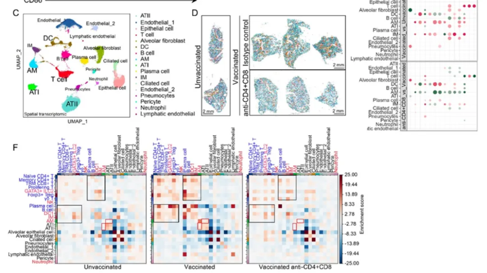
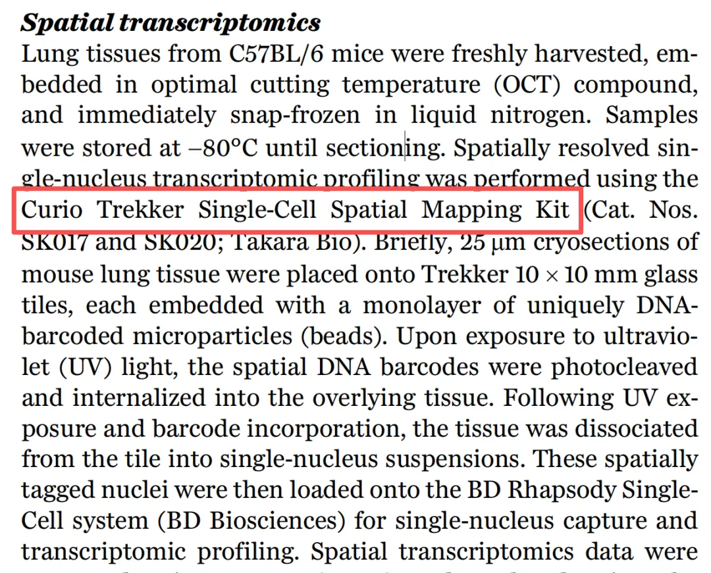
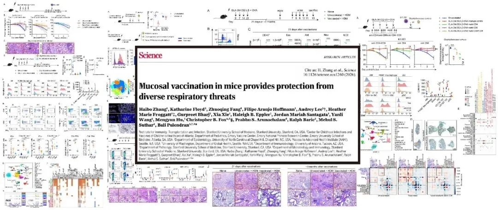
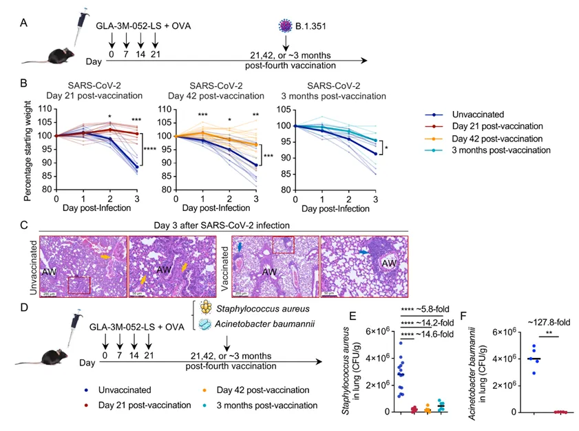
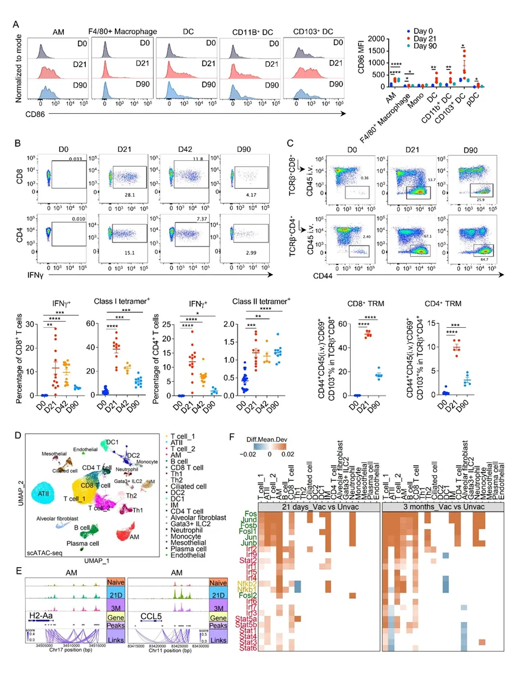
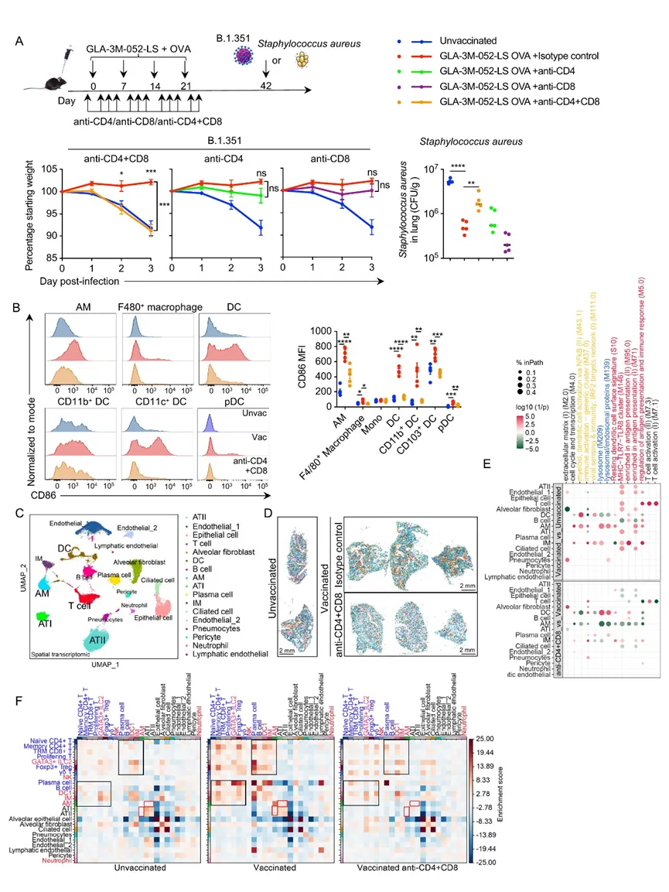
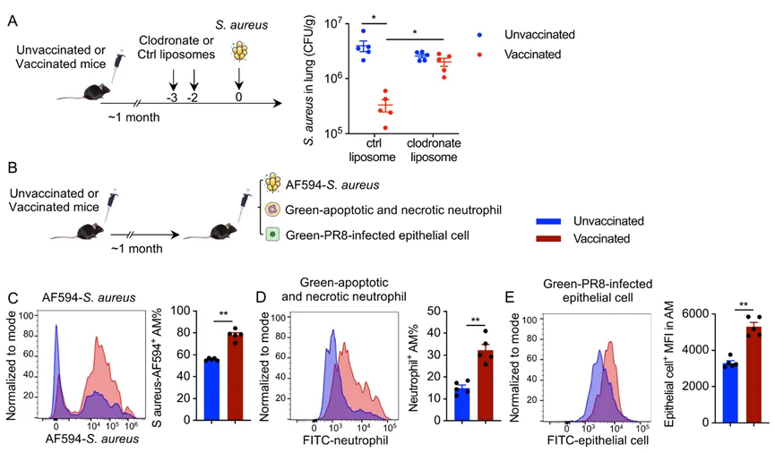
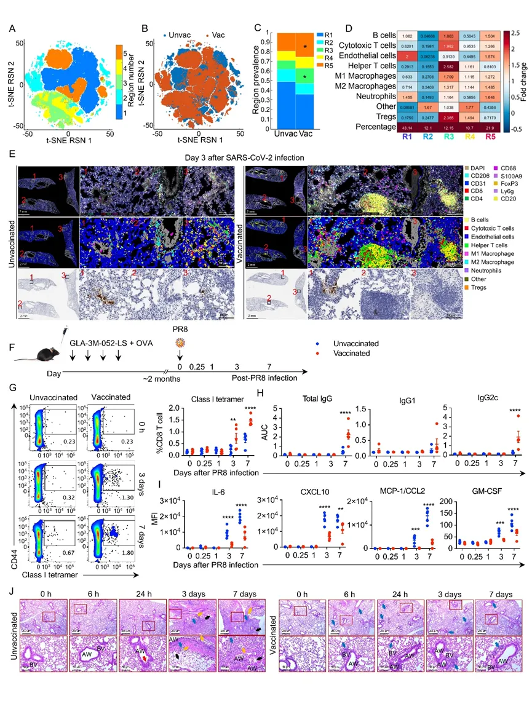
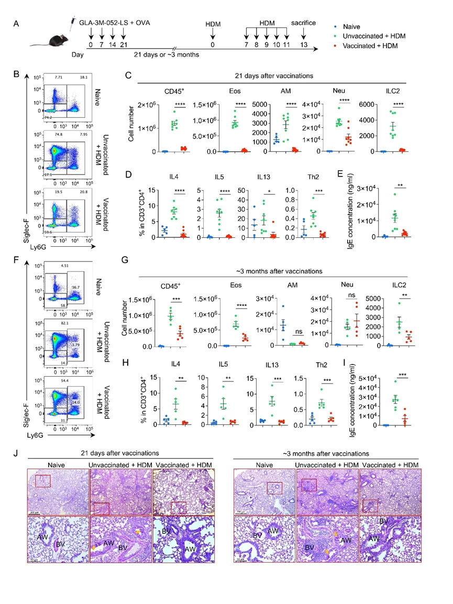

2月《Science》也开始用单细胞核空转平台了
原文：https://mp.weixin.qq.com/s?__biz=MzAwMzIzOTk5OQ==&mid=2247535920&idx=1&sn=d33d42f8c8fcce57a222f3f826826825&chksm=9b3c3460ac4bbd76ddb0b959b6c3c063d5d1eb250077c94d774b7e981d754796c9009f48b7ff#rd 合集：文献速递
一、写在前面
(一)、简介
文章《Mucosal vaccination in mice provides protection from diverse respiratory threats 》（小鼠黏膜疫苗接种可提供针对多种呼吸道威胁的保护），该文献发表于杂志《Science》，2026 年，影响因子为 45.8。
值得一提的是，该文的Figure3中用到了一种单细胞(核)空转平台，众所周知，Cell bin浑身难受，我们此前介绍的SeekSpace也是一种类似的单细胞(核)空转平台，至少在细胞身份确认上优于sqaure bin、平均Feature数上要优于Cell bin。

(二)、单细胞空间转录组核心相关技术及发展脉络
1、Slide-tags技术与Curio Trekker商业化转化：Slide-tags技术的相关研究成果于2023年12月发表在Nature期刊（Slide-tags enables single-nucleus barcoding for multimodal spatial genomics）。2024年Curio宣布将Broad研究所Slide-tags技术商业化
2、Stamp-seq技术与SeekSpace®商业化转化：中科院北京基因组研究所田晨曦研究员、湖南省肿瘤医院早期临床研究中心张永昌主任与北京寻因生物研发中心焦少灼总监合作，在Cell Discovery期刊发表相关研究，提出并开发了Stamp-seq技术。2023年12月该技术正式上市，即北京寻因生物的SeekSpace®空间转录组产品，其核心价值在于实现真正单细胞分辨率的空间定位与精准转录组分析，为解析复杂组织的细胞相互作用和组织结构提供了强有力的技术支撑。
Slide-tags与Stamp-seq作为单细胞空间转录组的代表性技术，均以解决真实科研痛点为出发点，通过底层技术创新与高效商业化落地，共同推动单细胞空间转录组从 “概念突破” 走向 “广泛可用”。它们不仅补齐了单细胞测序与传统空间转录组之间的技术短板，更以高分辨率、高保真、高适用性的特点，成为探索组织微环境、细胞命运调控、疾病病理机制的标配工具。

(三)、文章研究背景
面对新发和再发呼吸道病原体对全球健康的严峻威胁，传统特异性疫苗因难以应对病毒变异和未知病原体而显得力不从心，亟需开发能抵御多种空气传播病原体的广谱疫苗。虽然流行病学观察到卡介苗等减毒活疫苗能提供针对无关感染的非特异性保护，且传统观点将其归因于先天免疫细胞的“训练免疫”效应，但这篇研究揭示了更为复杂的机制。
此研究通过研发一种鼻内脂质体疫苗制剂，结合TLR4/7/8配体与模型抗原卵清蛋白（OVA），通过鼻内给药方式接种小鼠，观察其对多种呼吸道病原体的防护效果，并深入探究免疫机制。利用单细胞测序和空间转录组技术，作者发现这种广谱保护实际上依赖于疫苗诱导的抗原特异性T细胞与先天免疫及肺部结构细胞（如肺泡巨噬细胞、上皮细胞）的深度协同，而非单纯的先天免疫重编程。基于此，作者提出了“整合器官免疫”这一新概念，强调适应性免疫、先天免疫与组织细胞共同构成了一个复杂的局部防御网络，这为设计下一代能够增强大流行防范能力的通用型黏膜疫苗奠定了关键的理论与策略基础。

更多课程：
Python版scRNA-seq分析全流程Python 空间转录组全程班如果需要单细胞数据分析指导 、生信热点全文复现、自测数据个性化分析 辅导、常态化实验学习，欢迎联系客服微信[Biomamba_zhushou]。
二、主要内容
（1）鼻内接种GLA-3M-052-LS与OVA联合疫苗，可对SARS-CoV-2（新冠病毒）、PR8流感病毒、金黄色葡萄球菌以及肺炎链球菌感染提供强效且持久的保护
作者评估了一种鼻内疫苗，该疫苗结合了TLR4激动剂GLA和TLR7/8激动剂3M-052-LS，并与卵清蛋白（OVA）联用。小鼠共接受四次鼻内接种，并在不同时间点评估了其对多种呼吸道病原体的抵抗力（Fig.1A）。结果发现在疫苗接种后第21天、第42天和第3个月进行SARS-CoV-2攻毒实验时，与未接种的对照组相比，接种组小鼠的体重减轻显著减少（Fig.1B）,感染后第3天的肺组织病理学分析 显示，接种组动物的炎症反应和肺泡损伤均有所减轻（Fig.1C）,此外，接种组小鼠对金黄色葡萄球菌（ Staphylococcus aureus ）和鲍曼不动杆菌（ A. baumannii ）的细菌感染也表现出持久的保护作用，至少在疫苗接种后3个月内，其肺部细菌载量较低（Fig.1D-F）。

Fig.1（2）疫苗接种建立了持久的抗原特异性组织驻留记忆 T细胞（TRM）反应，并通过表观基因组重塑重编程了肺泡巨噬细胞
为了阐明这种持久、非特异性保护背后的细胞机制，作者表征了GLA-3M-052-LS + OVA免疫所引发的先天和适应性免疫反应。首先通过流式细胞术检测了抗原提呈细胞，如包括肺泡巨噬细胞（AM）、树突状细胞（DC）、单核细胞和F4/80+巨噬细胞的水平，结果显示大多数先天免疫反应在一周内恢复到基线水平，但AM的激活状态至少保持了90天（Fig.2A）。
与此同时，作者评估了T细胞反应，发现黏膜疫苗接种在肺部产生了高频率的长寿疫苗特异性（四聚体+ OVA特异性）CD4+和CD8+ T细胞（Fig.2B）。此外，作者发现CD8+和CD4+组织驻留记忆T（TRM）细胞在接种后至少3个月内积聚在接种后小鼠肺部（Fig.2C）。、
作者对总共96,834个肺细胞进行了scATAC-seq，揭示了接种后0天、接种后21天组和90天组之间独特的染色质可及性模式（Fig.2D），发现在接种后至少3个月内AM细胞中抗原提呈基因、干扰素刺激基因、炎症调节基因以及膜脂质转运蛋白相关等基因的染色质可及性很高（Fig.2E）。且转录因子（TF）motif分析显示，AP-1家族（包括Fos, Fosb, Jund, Jun, Junb）在多种细胞群（包括T细胞、AM、中性粒细胞、纤毛细胞和单核细胞等）中富集（Fig.2F）。以上结果表明GLA-3M-052-LS + OVA疫苗接种诱导了强效且持久的免疫反应，其特征是诱导了抗原特异性TRM细胞，并对上皮细胞和先天细胞（特别是AM）进行了持久重编程，表现为促进抗原提呈和抗病毒状态的持续表观遗传和转录变化。

Fig.2
（3）抗原特异性T细胞通过肺泡巨噬细胞协调整合的肺部免疫反应
为了进一步证实上述的结论，作者利用流式细胞术比较了含与不含OVA抗原的GLA-3M-052-LS佐剂配方在抗原非依赖性保护方面的差异，在GLA-3M-052-LS + OVA免疫方案的全过程中，若同时清除小鼠体内的CD4+和CD8+ T细胞，则疫苗介导的针对SARS-CoV-2的保护作用完全消失，单独清除CD4+或CD8+ T细胞均不足以消除GLA-3M-052-LS + OVA的保护效果，表明这两类T细胞群体发挥着冗余的作用（Fig.3A）。在CD4+和CD8+ T细胞被清除的小鼠中，相较于接种对照组，AM、F4/80+巨噬细胞和DC亚群对GLA-3M-052-LS + OVA反应所表达的CD86水平有所下降（Fig.3B）。
之后，作者对未接种小鼠、接种小鼠以及在免疫过程中清除了CD4+和CD8+ T细胞的接种小鼠的肺组织进行了单核空间转录组分析。UMAP分析揭示了多样的肺细胞群，包括肺泡上皮细胞、AM、间质巨噬细胞（IM）、DC、T淋巴细胞和B淋巴细胞（Fig.3C）。转录特征的空间聚类和映射显示，各组之间的组织结构和细胞组成存在显著差异，其中接种后的肺部出现了明显的空间重构（Fig.3D）。且分析结果显示接种小鼠中AM中抗原提呈、吞噬作用和抗病毒免疫激活通路明显上调（Fig.3E），细胞间通讯强度分析显示接种后的肺部相互作用全局增强（Fig.3F）。以上结果证实适应性免疫（特别是T细胞）是诱导先天免疫“训练”并实现广谱保护的绝对必要条件。

Fig.3（4）肺泡巨噬细胞协调整体疫苗诱导的非特异性保护
进一步地，作者旨在评估AMs 的表观遗传变化在介导非特异性保护中的作用。首先在攻毒前短时间内，通过鼻内给药氯膦酸盐脂质体（clodronate liposomes）清除 AMs，结果发现这削弱了 GLA-3M-052-LS + OVA 对金黄色葡萄球菌（S. aureus）的保护作用，表现为肺部病原体载量升高（Fig.4A），为了确定AMs 的功能变化，作者量化了其针对多种靶标的吞噬能力（Fig.4B）,包括AF594 标记的金黄色葡萄球菌（Fig.4C）, 凋亡和坏死的嗜中性粒细胞（Fig.4D）和PR8（流感病毒）感染的肺上皮细胞（Fig.4E）。结果发现与未接种小鼠的 AMs 相比，接种小鼠的 AMs 表现出更强的体内摄取能力。

Fig.4
（5）疫苗接种启动三级淋巴结构形成，增强抗原提呈同时限制炎症
为了研究感染后的空间组织和免疫动力学，作者对接种和未接种小鼠在接触SARS-CoV-2后的肺组织进行了多重空间蛋白成像和组织病理学分析。分析结果显示病毒感染后三天，接种小鼠肺部表现出明显的空间重编程，如基于RSN的t-SNE聚类所示（Fig.5 A-C）。且接种小鼠肺部富集的区域特征为免疫密集微环境频率增加，包括区域3和区域5，这些区域富含辅助性（CD4+）和细胞毒性（CD8+）T细胞、B细胞、调节性T细胞和巨噬细胞（Fig.5D）,同时，免疫组化显示TLS与SARS-CoV-2核蛋白（N蛋白）共定位（Fig.5E）, 空间分布分析显示，富含TLS的区域（区域3）主要定位于气道周围，这表明疫苗接种使肺组织做好了准备，以便在感染时进行快速且结构化的免疫参与。与这些发现一致，接种小鼠表现出抗原特异性NP四聚体+ CD8+ T细胞在肺部的加速积累（Fig.5F-G），且支气管肺泡灌洗液（BAL）中HA特异性总IgG和IgG2c的增加（Fig.5H）。这些免疫反应伴随着BAL液中促炎细胞因子表达的降低（Fig.5I），此外，动态组织病理学分析显示，疫苗接种显著减少了肺部病理损伤，并促使免疫细胞在6小时内早期募集到支气管区域（Fig.5j）

（6）GLA-3M-052-LS + OVA 疫苗接种提供针对过敏性哮喘的长期保护
鉴于组合使用 TLR4 和 TLR7 激动剂能驱动强效的 Th1 偏向性免疫反应（39, 40），作者假设这种黏膜疫苗接种策略也可能抑制由 Th2 驱动的超敏反应性疾病，例如屋尘螨（HDM）诱导的哮喘。流式细胞术结果显示与未接种的对照组相比，接种小鼠表现出嗜酸性粒细胞和 2 型先天淋巴样细胞（ILC2）的浸润减少；表达 IL-4、IL-5 和 IL-13 的 Th2 细胞减少；血清 IgE 水平降低（Fig.6A-I）。对于肺切片进行的PAS分析进一步证实了黏液过度分泌的减少（Fig.6A-i），确认了 GLA-3M-052-LS + OVA 能有效缓解过敏性哮喘。以上数据表明疫苗诱导的免疫重塑具有持久性。

三、总结与讨论
这项研究提出了一种革命性的鼻内黏膜疫苗策略（GLA-3M-052-LS），它突破了传统疫苗依赖抗原特异性匹配的局限，转而通过激活TLR4/7/8通路和诱导抗原特异性记忆T细胞，对肺部微环境进行“重编程”。该策略不仅能表观遗传性地训练肺泡巨噬细胞以增强其非特异性抗病毒和抗菌能力，还能促使肺组织在遭遇感染时迅速组装三级淋巴结构（TLS），从而建立起一种持久、广谱的“器官级免疫”防御状态。
这种“通用防御”模式具有双重核心价值：一方面，它能针对流感、新冠等多种呼吸道病毒及细菌提供异源保护，甚至可作为大流行早期的应急手段；另一方面，它通过确立Th1免疫优势有效抑制Th2反应，显著预防过敏性哮喘。尽管人类复杂的免疫暴露史带来了转化挑战，但该研究为开发无需等待毒株匹配、能同时应对传染病与过敏性疾病的下一代通用疫苗奠定了坚实的理论与实验基础。

如何联系我们

 留一个领取资料、开箱即用的单细胞分析镜像的微信号[Biomamba_zhushou]，方便各位随时交流。同时我们也构建了交流群矩阵，欢迎大家入群讨论。
大家可以阅读完这几篇之后添加给生信入门初学者的小贴士
没有检索，就没有发言权
留一个领取资料、开箱即用的单细胞分析镜像的微信号[Biomamba_zhushou]，方便各位随时交流。同时我们也构建了交流群矩阵，欢迎大家入群讨论。
大家可以阅读完这几篇之后添加给生信入门初学者的小贴士
没有检索，就没有发言权
已有生信基地联系方式的同学无需重复添加

 您点的每个赞和在看，我都认真当成了喜欢
您点的每个赞和在看，我都认真当成了喜欢